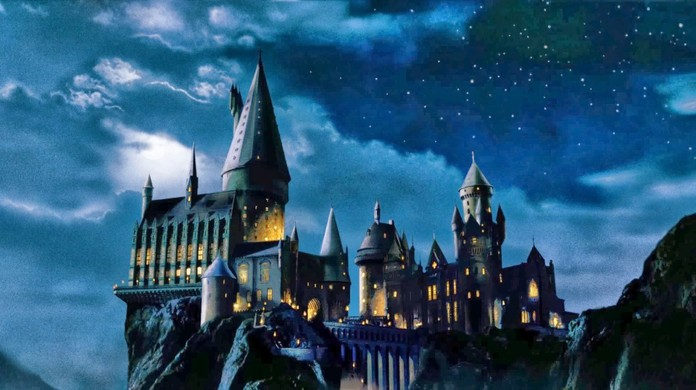

E o que dizer dessa escola maravilhosa, onde todos queríamos ter a chance de aprender as mais variadas e divertidas matérias?

Escola de Magia e Bruxaria de Hogwarts
A Escola de Magia e Bruxaria de Hogwarts, ou simplesmente Hogwarts, é um internato de magia para bruxos e bruxas britânicos com idades entre onze e dezessete anos. É o palco principal dos primeiros seis livros da série Harry Potter, de J. K. Rowling, cada livro equivalendo a um ano letivo. No volume derradeiro da série, Harry Potter e as Relíquias da Morte, no entanto, a maior parte da história se passa fora de Hogwarts, uma vez que os personagens principais, Harry Potter, Ronald Weasley e Hermione Granger, não atendem ao sétimo e último grau de ensino (embora Rowling tenha declarado que Hermione retorna à escola depois dos acontecimentos descritos em Harry Potter e as Relíquias da Morte para prestar os seus exames de Níveis Incrivelmente Exaustivos de Magia). A batalha climática do livro e da série, no entanto, ocorre em Hogwarts.
As Casas de Hogwarts funcionam como se fossem a família de cada estudante. Seus acertos, seja por respostas corretas nas aulas, seja por bons atos, lhes rendem pontos. Já seus erros nas aulas ou transgressões às regras fazem com que percam pontos. No fim do ano a Casa com mais pontos ganha a Taça das Casas.

Casas de Hogwarts